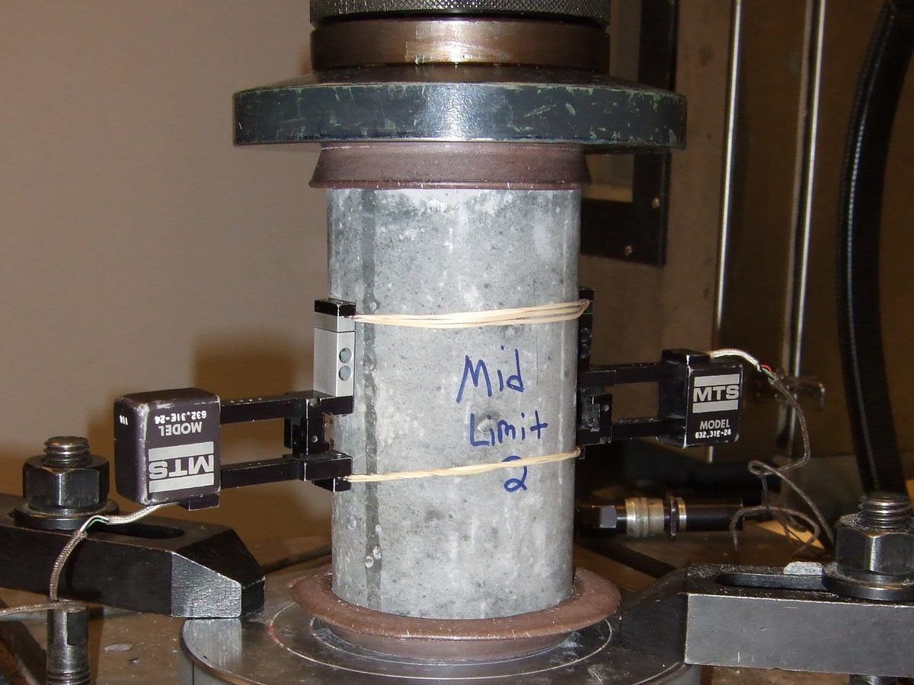
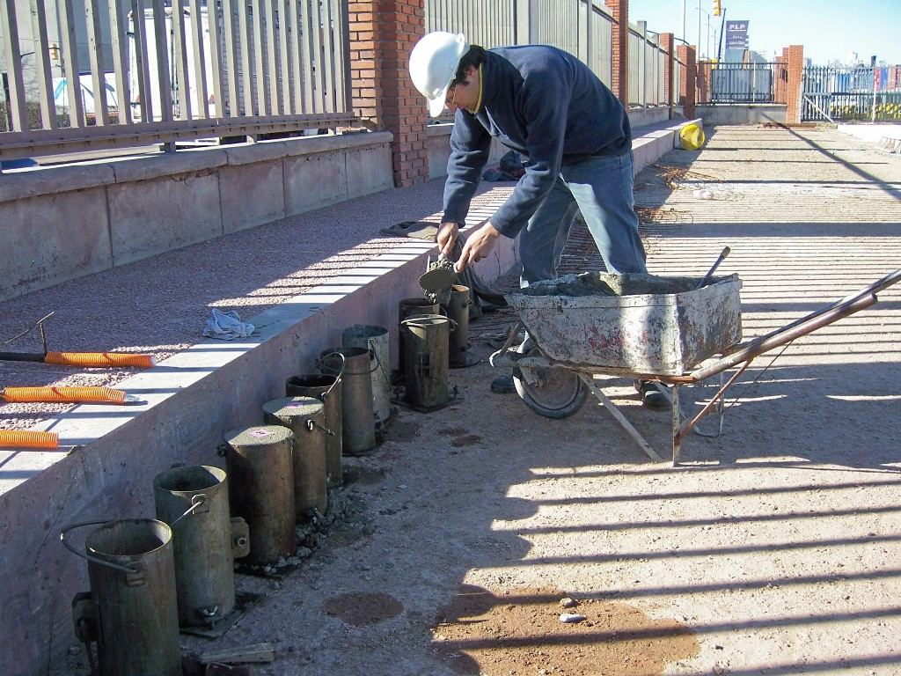
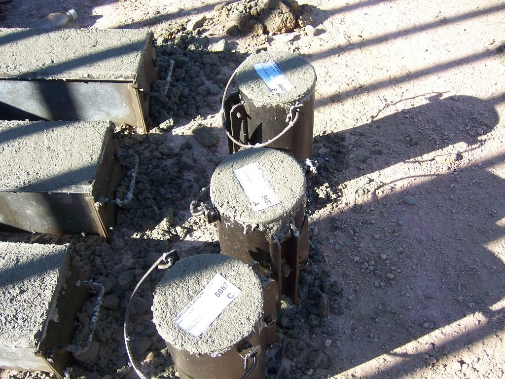
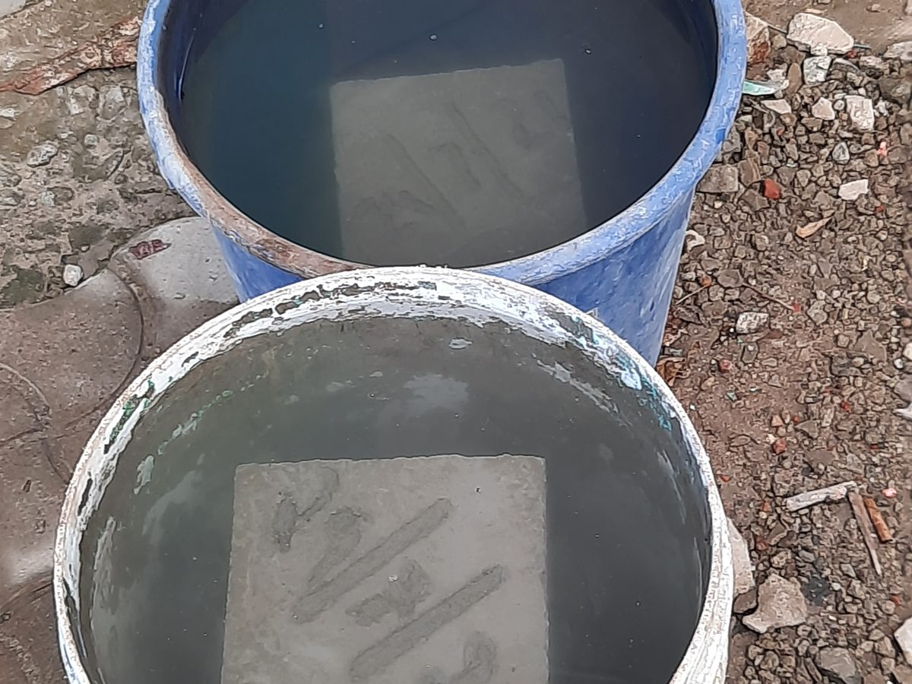
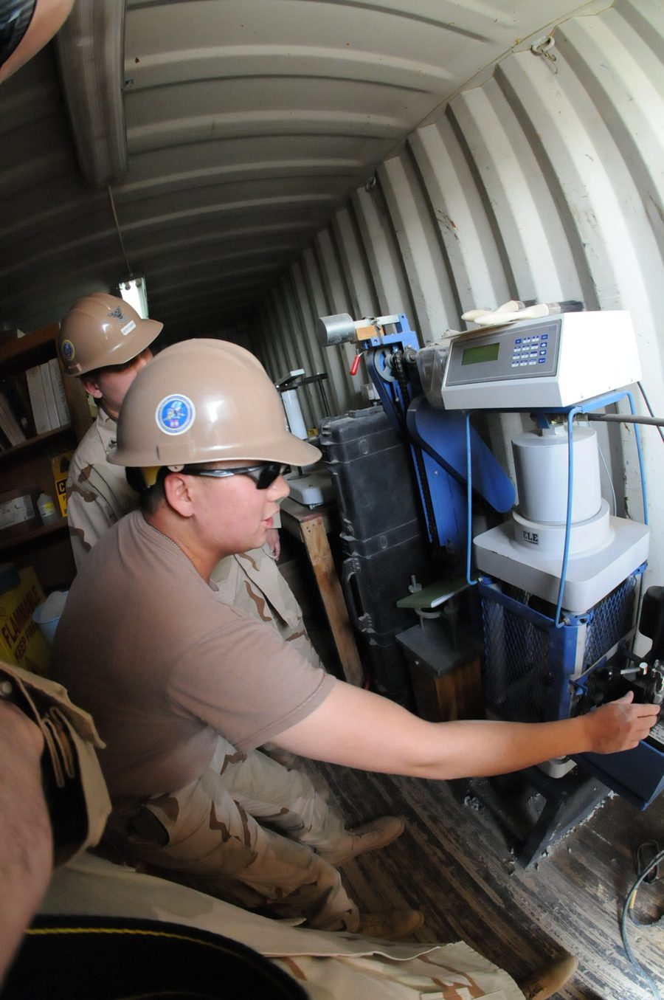
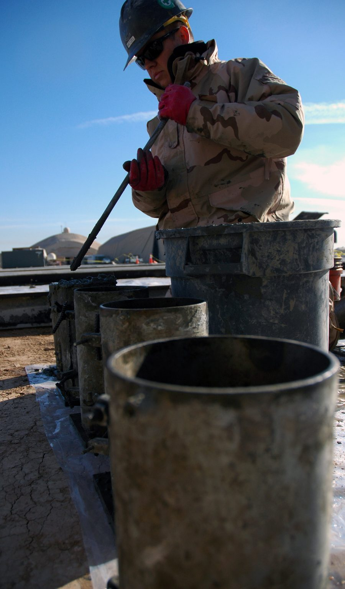
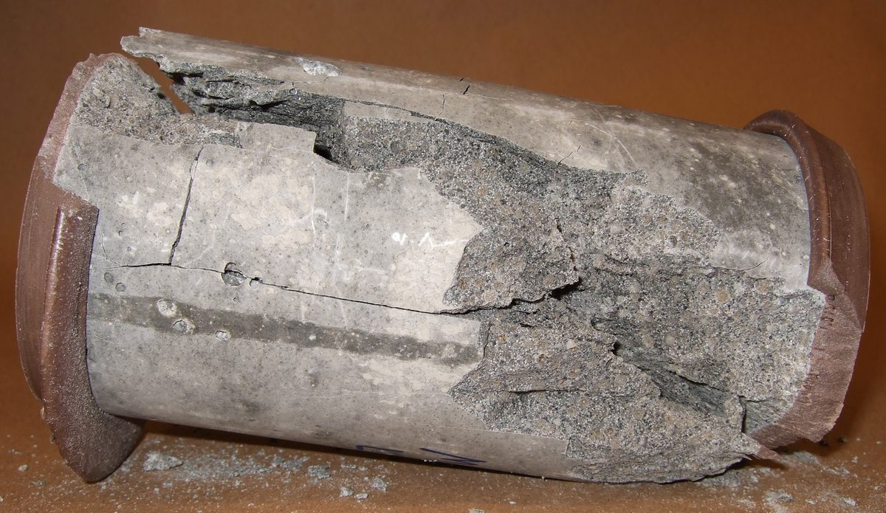

1What a cylinder measures — and what it does not

Every structural drawing carries one number for the concrete: f′c, the specified compressive strength — 3,000, 4,000, 5,000 psi. Nobody can measure it in the beam. So the trade agreed on a proxy: a cylinder of the same concrete, made at the point of delivery, cured under standard conditions, and crushed at 28 days. That cylinder does not tell you the strength of the column it came from; it tells you whether the concrete delivered had the potential the mix design promised. That is the acceptance question, and it is the one this article is about.
A strength test is not one cylinder. Under ACI 318 it is the average of at least two 6 × 12 in. cylinders, or at least three 4 × 8 in. cylinders, made from the same sample of concrete and tested at the same age — normally 28 days.
Two other kinds of cylinder exist, and mixing them up causes real trouble. Field-cured cylinders are kept with the structure, in its temperature and moisture, and answer a different question: is the slab strong enough to strip the forms, to stress the tendons, to load it? Seven-day cylinders are broken early as an indicator of where the 28-day result is heading; they are never the basis for acceptance. When a set of cylinders "fails", the first thing to check is which of the three kinds it was — and how it was treated in its first two days.
Standard-cured cylinders judge the concrete; field-cured cylinders judge the structure. Most "low breaks" trace back to how cylinders were handled, not to what was in the truck.
2Making the specimens (ASTM C31)


The sample is the same composite sample the slump test uses (ASTM C172), and the same clock runs: molding starts within 15 minutes of taking it. Two sizes are standard, and the mold must be twice as tall as it is wide: 6 × 12 in. (150 × 300 mm) or 4 × 8 in. (100 × 200 mm). The smaller mold weighs a third as much, cures faster, and fits more in a curing box; the larger one has a longer track record. The choice belongs to the specification, not to the technician, because the two are not interchangeable in the acceptance rule.
- Fill in layers. Three layers for a 6 × 12, two for a 4 × 8, each about a third (or half) of the mold depth, placed with a scoop and moved around the rim so the coarse aggregate is spread, not piled.
- Rod each layer 25 times. The rounded end of the rod, strokes spread evenly over the cross-section; the bottom layer through its full depth without hammering the base, the upper layers about 1 in. (25 mm) into the layer below. The 6 × 12 takes the 5/8 in. (16 mm) rod, the 4 × 8 the 3/8 in. (10 mm) rod.
- Tap the mold. After rodding each layer, tap the outside of the mold 10 to 15 times with the mallet — or the open hand on a light plastic mold — to close the holes the rod left and release trapped air.
- Strike off and cover. Strike the top flush with the rim, put the lid on or wrap the top, and write the identification on the mold, not on a scrap of paper that blows away.
A cylinder rodded 15 times, or a 4 × 8 filled in three layers with the big rod, is a cylinder of a different concrete. Consolidation errors do not average out; they only lower the result and start an argument that the concrete supplier will win.
3Curing: the first 48 hours, then the tank
Everything that goes wrong with cylinders tends to go wrong in the first two days. ASTM C31 asks for initial curing — up to 48 hours at 60 to 80 °F (16 to 27 °C), or 68 to 78 °F (20 to 26 °C) when the specified strength is 6,000 psi (40 MPa) or more — in a place that prevents moisture loss, out of direct sun, and away from vibration. In practice that is an insulated curing box with a max–min thermometer, sometimes with ice or a light bulb inside, never the bed of a pickup truck.

Then the specimens go to the laboratory: cushioned against jarring, protected from freezing and from drying, in a transport that takes no more than 4 hours, and into standard curing within 30 minutes of arriving. Standard curing is 73.5 ± 3.5 °F (23 ± 2 °C) with free water on every surface, in a moist room or a lime-saturated water tank (ASTM C511), from the day they are demolded — 24 ± 8 hours after casting — to the day they are tested. Field-cured cylinders skip all of this on purpose: they stay next to the structure, under the same blankets and in the same weather, because their job is to report on that structure.
Cold, heat, and drying in the first 48 hours cannot be undone by perfect curing afterwards. A cylinder that spent a January night on the tailgate will break low, and the concrete in the wall — which was blanketed and heated — is probably fine.
4Breaking the cylinder (ASTM C39)


A compression test is simple to describe and easy to spoil. The machine presses the cylinder between two platens until it breaks; the strength is the maximum load divided by the cross-sectional area. The details that make one laboratory's 4,000 psi the same as another's are these.
- The ends must be flat and square. Plane within 0.002 in. (0.05 mm) and perpendicular to the axis within 0.5°. Almost no cast cylinder meets that, so the ends are either capped with sulfur mortar or high-strength gypsum (ASTM C617) or tested between unbonded neoprene pads in steel retainers (ASTM C1231), which is permitted for strengths between 1,500 and 12,000 psi (10 and 80 MPa).
- The diameter is measured, not assumed. Two diameters at right angles at mid-height, to the nearest 0.01 in. (0.25 mm), averaged. The area comes from that, because a "6 in." mold is rarely exactly 6.00 in.
- The age is on time. The standard allows 24 h ± 0.5 h, 3 d ± 2 h, 7 d ± 6 h, 28 d ± 20 h, and 90 d ± 2 d. A "28-day" cylinder broken on day 30 is a 30-day cylinder.
- The load rises at a fixed rate. 35 ± 7 psi/s (0.25 ± 0.05 MPa/s), applied continuously and without shock, right through to failure; the rate is not adjusted as the cylinder starts to yield. Load faster and the number goes up.
- The specimen is still moist. Cylinders come out of the tank and are broken while damp; a dried-out cylinder reads differently.
A 6 × 12 cylinder has an area of 28.27 in.²; a maximum load of 122,200 lbf is 4,322 psi, reported as 4,320 psi. A 4 × 8 has 12.57 in.², so the same concrete breaks at less than half the load. When a specimen is shorter than it should be — a core, or a cylinder cut down — a length-to-diameter correction applies:
| L/D | 2.00 | 1.75 | 1.50 | 1.25 | 1.00 |
|---|---|---|---|---|---|
| Factor | 1.00 | 0.98 | 0.96 | 0.93 | 0.87 |
Interpolate between the tabulated ratios; no correction is needed above L/D = 1.75. A standard cylinder has L/D = 2.
5Reading the break

C39 asks the operator to sketch the fracture against six standard patterns, and the sketch matters as much as the load. Types 1 to 3 are what sound concrete does under a well-aligned load; types 4 to 6 point at the caps, the pads, or the platens, and a low number with one of those shapes is a suspect test, not a suspect batch.
The two or three cylinders of one test should also agree with each other. The test method's own precision statement puts the normal spread of a pair of 6 × 12 cylinders from the same sample at a few percent of their average; a spread wider than about 7 % (about 9 % for three 4 × 8 cylinders) means one cylinder was made, cured, capped, or broken differently, and the technician should say which before the average is used.
6The acceptance decision (ACI 318)
Cylinders are made on a schedule the code sets, not when someone remembers. For each concrete mixture ACI 318 asks for at least one strength test a day, at least one for every 150 yd³ (110 m³) placed, and at least one for every 5,000 ft² (460 m²) of slab or wall surface. If the whole job would produce fewer than five tests, tests are taken from at least five randomly chosen batches — or from every batch, if there are fewer than five — and for placements under 50 yd³ (40 m³) the tests can be waived when other evidence of strength is accepted.
Then the rule itself, which every technician, inspector and contractor should be able to recite. The strength of a concrete mixture is acceptable when both of these hold:
(a) Every arithmetic average of any three consecutive strength tests equals or exceeds f′c; and
(b) No strength test falls below f′c by more than 500 psi (3.5 MPa) when f′c is 5,000 psi (35 MPa) or less, or by more than 10 % of f′c when it is higher.
The two criteria fail in different ways and call for different responses. When the running average slips below f′c, the mixture is drifting — the supplier adjusts the proportions so later tests come up — and nobody cores a wall. When a single test lands more than 500 psi low, the concern is that one batch may be weak in place, and ACI 318 calls for an investigation: three cores from the area represented by the failing test, tested per ASTM C42, and the concrete is structurally adequate when the average of the three is at least 0.85 f′c and no single core is below 0.75 f′c. Before anyone drills, though, the cylinders' history is checked, because a set that froze in a truck fails criterion (b) just as convincingly as bad concrete does.
The criteria assume scatter: a mix that averages exactly f′c fails half the time. That is why the mixture is designed for a higher required average strength, f′cr — the margin worked out in Part 1 of the mix design series.
7How strength grows with age
Concrete gains strength as cement hydrates, quickly at first and then for years, as long as it stays moist and warm enough. The 28-day age is a convention — long enough for most of the strength, short enough to be useful — and everything else is measured against it. ACI 209 gives a serviceable estimate of the fraction of the 28-day strength reached at an age t in days:
| Age, days | 1 | 3 | 7 | 14 | 28 | 56 | 90 |
|---|---|---|---|---|---|---|---|
| Fraction | 0.20 | 0.45 | 0.70 | 0.87 | 1.00 | 1.08 | 1.11 |
Fractions normalized so that 28 days reads exactly 1.00. Type III (high-early) cement runs ahead of this — about 0.80 at 7 days — and every mixture has its own curve; the numbers are an estimate for planning, never a basis for acceptance.
The practical use is the other way round: a 7-day cylinder at 3,050 psi suggests a 28-day result near 4,350 psi, so the job can carry on with some confidence — or, if the 7-day number is far below the expected 70 %, the supplier can start looking for the cause three weeks before the acceptance test fails. Temperature bends the curve in both directions: hydration slows dramatically as the concrete approaches freezing, and a slab that dries out stops gaining strength altogether, which is what curing compounds, wet burlap and blankets are for.
8Try it: strength tests, the acceptance rule, and the age curve
The numbers below are example numbers, not a real job. Enter the maximum load of each cylinder and the calculator reports each strength to the nearest 10 psi, averages the cylinders of each test, checks both ACI 318 criteria, and draws the tests as a control chart. The second plot turns one 28-day strength into an estimated age curve.
- Criterion (b) limit
- —
- Tests entered
- —
- Verdict
- —
- 7-day estimate
- —
| Age, days | 1 | 3 | 7 | 14 | 28 | 56 | 90 |
|---|---|---|---|---|---|---|---|
| Strength, psi | — | — | — | — | — | — | — |
Units: lbf and psi throughout (1,000 psi = 6.895 MPa). Strengths are rounded to 10 psi before averaging, as a laboratory report would show them.
9Common mistakes
- Treating one cylinder as a test. A strength test is the average of two 6 × 12 or three 4 × 8 cylinders. One low cylinder in a pair is a question about that cylinder first.
- Cylinders in the truck. Left in a hot cab or a freezing bed for the first night, they read low, and the wall is blamed for the technician's evening. Use a curing box and log its thermometer.
- Judging acceptance on 7-day breaks. Seven-day cylinders are an indicator. The acceptance test is at 28 days (or the age the specification names).
- Mixing up the two criteria. A low three-test average means adjust the mix; a single test more than 500 psi low means check the cylinders' history and, if that is clean, investigate the structure with cores.
- Assuming the diameter. A 5.95 in. cylinder called 6.00 in. under-reports the strength by almost 2 %; measure it.
- Loading too fast, or easing off near the peak. Both change the number. The rate is 35 ± 7 psi/s from start to break.
- Ignoring the fracture sketch. A type 5 or 6 break with a low number is a capping or pad problem until proven otherwise.
10Key takeaways
- A cylinder judges the concrete delivered, not the structure; standard curing (73.5 ± 3.5 °F, moist) and the first 48 hours (60 to 80 °F, no drying) decide whether the number means anything.
- Make them right: molding within 15 minutes, 25 strokes per layer with the matching rod, tap the mold, cover the top.
- Break them right: ends capped or padded, diameter measured, age on time, 35 ± 7 psi/s, strength = P/A to the nearest 10 psi, fracture type recorded.
- Accept them by the rule: every three-test average ≥ f′c and no test more than 500 psi below f′c (10 % above 5,000 psi) — and follow the failure to the right fix.
Sources: ASTM C31/C31M (making and curing field specimens); ASTM C39/C39M (compressive strength); ASTM C617 and C1231 (capping and unbonded caps); ASTM C42 (cores); ASTM C172 and C511; ACI 318-19 §26.12 (evaluation and acceptance); ACI 209R-92 (strength–age relation). Precision figures are stated approximately.
Photo credits: Concrete Compression Testing and Failed Concrete Cylinder by Xb-70, public domain; Concrete cylinder break test and filling cylinders for a compression test, U.S. Navy photos, public domain; Probetas hormigón 01 and 02 by Tano4595, CC BY-SA 2.5; Cube Test 2 by Fotokannan, CC BY-SA 4.0; all via Wikimedia Commons. The photos were resized, cropped and recompressed for the web.
{kind=link}
{kind=link}
{kind=link}
_1,_Task_Force_Sierra,_fills_cylinders_with_concrete_in_preparation_for_a_compression_test.jpg){kind=link}
{kind=link}
{kind=link}
{kind=link}